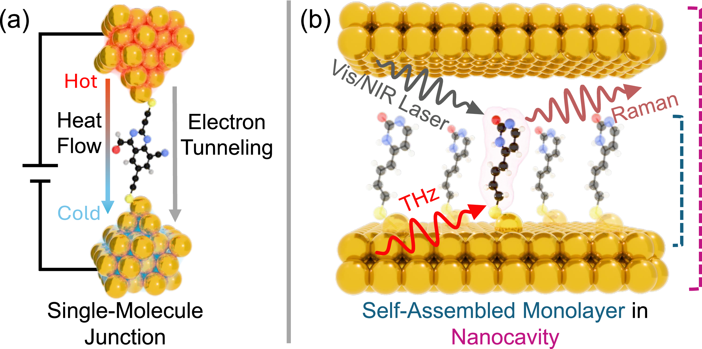

Bridging machine learning and quantum materials science — a rigorous testbed for generative models and a discovery engine for nanotechnology.

Generative molecular design is shaped by simple proxy benchmarks for drug-like properties and models pretrained on large pharmaceutical datasets. This combination yields strong benchmark metrics but limits transferability to domains structurally distinct from drug discovery.
To overcome this limitation and drive discovery toward real, scientifically grounded targets, we introduce the Nanotechnology Molecular Optimization (NMO) Benchmark, which bridges machine learning (ML) and quantum materials science. NMO acts simultaneously as a rigorous testbed for the ML community and a discovery engine for nanotechnology research. The suite replaces proxy oracles with quantum simulations and introduces strict protocols that prioritize scientific utility over leaderboard-oriented overfitting. The physics-based NMO tasks impose hard structural constraints and rugged fitness landscapes, posing fundamentally new requirements on generative models.
Notably, advanced molecular optimization methods underperform much simpler approaches on the NMO tasks. We develop a new baseline method identifying the critical components to solve the NMO tasks, including a novel representation for modeling structural constraints and a domain-agnostic pretraining strategy to eliminate pharmaceutical dataset bias. Our results surpass state-of-the-art physical properties and reveal previously unknown structural motifs, offering new insights for the nanotechnology community and demonstrating that ML can drive genuine scientific discovery.
NMO poses three timely molecular design tasks from nanotechnology, made accessible to non-experts in the field through our automated workflows. Two tasks address single-molecule junctions (shown in Fig. 1(a)), where a single molecule is wired between two gold electrodes. The other setup is a self-assembled monolayer (SAM) (shown in Fig. 1(b)), where a film of molecules is deposited on a gold surface.
A strict set of rules prevents the benchmark from being exploited. This exact issue was a problem with pharmaceutical benchmarks, where high scores were often achieved by specifically adapting algorithms to individual test tasks rather than efficiently solving the underlying problem. Under NMO, every method must complete all three tasks using the same hyperparameter settings, and the number of allowed simulations is capped.
Designing single-molecule junctions to precisely control heat flow at the atomic scale. This enables the inverse design of robust thermal insulators, helping to engineer the next generation of nanoscale devices.
Optimizing the efficiency of converting a temperature difference into electricity in molecular junctions, which can be used for next-generation cooling systems or sustainable waste-heat harvesting.
Tailoring molecules as nanoantennas, facilitating room-temperature detection of terahertz radiation (the electromagnetic band between microwaves and infrared). This can be used for medical imaging and security applications.
If you find this work helpful, please cite it: